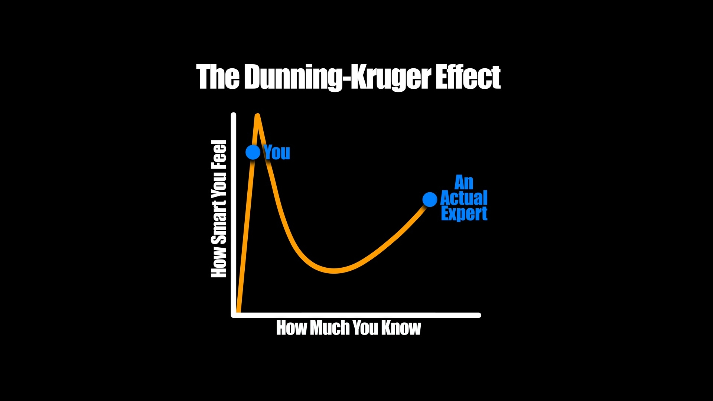
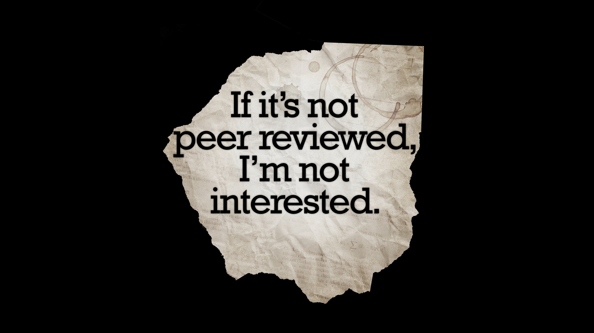
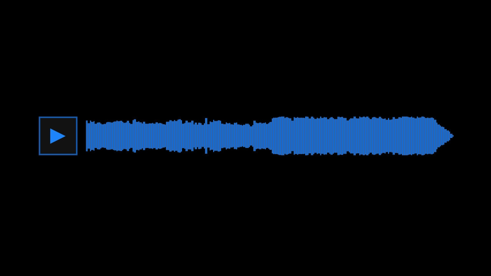
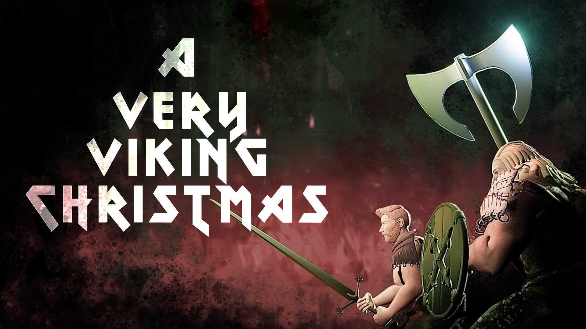

Software Developer • Data Scientist • Creative Entrepreneur
Full-stack Python developer specializing in Django and machine learning, with experience running multiple businesses, and a passion for creative AI experiments in music, art, and game development.
Lead Developer
Lead software developer for the internal Django application used by the Canadian Science Advisory Secretariate (CSAS). CSAS is a high-priority initiative at the Department of Fisheries and Oceans Canada. The CSAS application is used by thousands of government scientists across Canada to track scientific research from initial request through to publication. The application manages the entire research lifecycle — scientific research proposal, approvals, scheduling, stakeholder meetings, report writing, document review, translation, and publication tracking.
Database architecture is designed and implemented alongside REST APIs and a JavaScript frontend with responsive design. The tech stack includes MySQL, Django, and Vue.js, deployed on Linux with GitHub Actions for CI/CD. Business logic decisions are developed through direct collaboration with stakeholders, senior management, and the product owner.
(Repository is private — internal government project)
Lead ML Scientist
Lead machine learning scientist for a proof-of-concept pilot project to automate translation of scientific publications using fine-tuned sequence-to-sequence models in order to produce translations consistent with the style and terminology of previously published scientific research. This project aims to reduce translation bottlenecks in the publication pipeline while maintaining the quality standards required for government scientific publications.
Responsible for all implementation decisions, from model selection and training infrastructure setup to fine-tuning and evaluation. Training runs are executed on a dedicated Linux server. Presented technical plans, methodology, and results to senior management in plain language to secure approval for deployment.
A procedurally generated map and scenario generator for Descent: Journeys in the Dark, featuring a unique technical approach: all map rendering is done using Pandas DataFrames and Matplotlib.
Create face melting heavy metal guitar riffs using Python. Uses Markov Chains and music theory to algorithmically compose metal guitar music, outputting MIDI files.
An orbital mechanics simulation of two of Saturn's moons that share an orbit — visualizing the fascinating phenomenon of Janus and Epimetheus periodically swapping orbits.
A pretrained transformer LLM trained from scratch using chord progressions scraped from the internet. The model generates chord progressions that are typical of Pop music, and tends to respect rules taught in standard music theory.
Contract project at DFO. Exploratory data analysis and data cleaning of Gaspereau fisheries data for integration into a larger database. Involved performing data validation, visualization, and database import preparation.
Machine learning analysis predicting Billboard Hot 100 chart success using Spotify audio features. Explores clustering, classification, and the relationship between audio features and song popularity.
A simple audio mastering tool that analyzes audio files to determine how much limiting is needed to reach target loudness levels. Outputs true peak, integrated loudness units full-scale (LUFS), and volume adjustment recommendations.
A simple audio processing tool for cleaning up procedurally generated audio samples created in Ableton Live. This tool processes raw audio samples, fading in the first 6 samples to remove clicks, cropping to a desired length, and applying a custom fade-out. Useful for quickly editing a large number of samples created using techniques inspired by Ned Rush's procedural sample creation techniques on YouTube.
Converts images to pixelated, posterized art, using a defineable custom color palette. Optional cropping or stretching to match output aspect ratio. Optional blur before posterization for smoother results.

Best-selling t-shirt design featuring a humorous take on cognitive bias — perfect for the confidently incorrect.
Satirical shirt design commentary on get-rich-quick schemes.

A shirt for skeptics and science enthusiasts who appreciate proper methodology.
A shirt for embracing the stereotype with pride — a quintessentially Canadian apology.

Original music compositions available for licensing on Pond5. Various genres and styles for video, games, and media projects.
Solo Creative Project

A complete animated rock opera combining original music, animation, and storytelling into a festive viking metal experience. Every aspect created solo — from composition and recording to animation and video editing.
Music recorded and edited using Ableton Live, with Native Instruments and iZotope plugins. Modelling, animation, simulation, and rendering in Blender, using motion-capture animations from Mixamo. Film edited using DaVinci Resolve.
Probably the best animated Christmas viking metal rock opera on YouTube!
Written • Performed • Recorded • Animated • Edited
Watch on YouTube